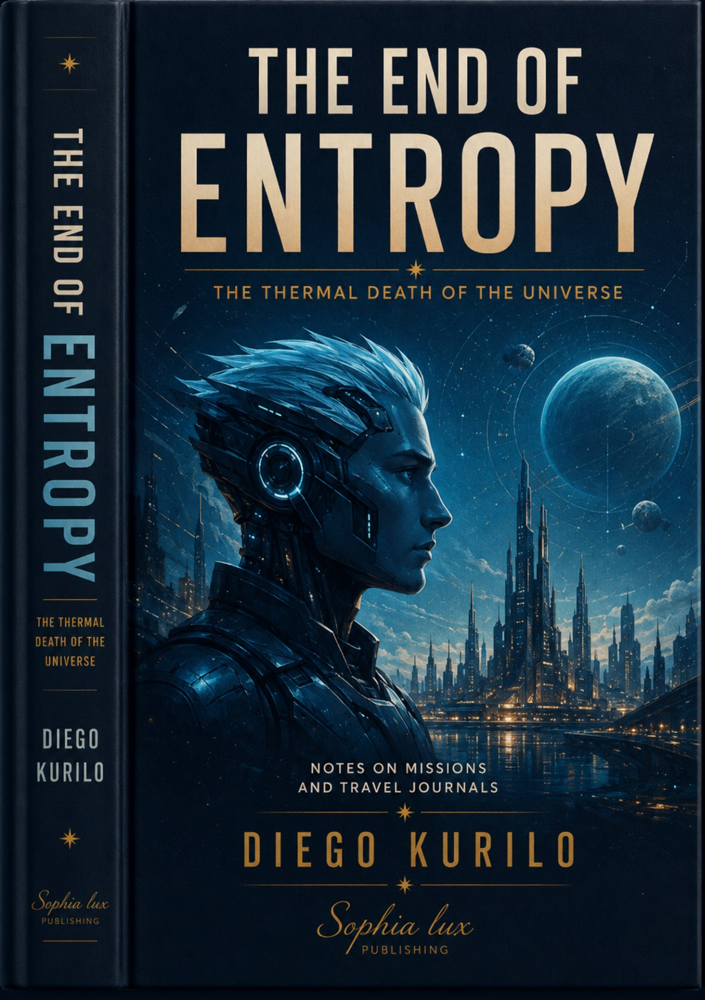

Philosophical science fiction
The End of Entropy
A philosophical science-fiction novel exploring memory, identity, time and the thermodynamics of information. Originally written in Spanish, with English, French, German and Italian translations.
Buy on Google Play